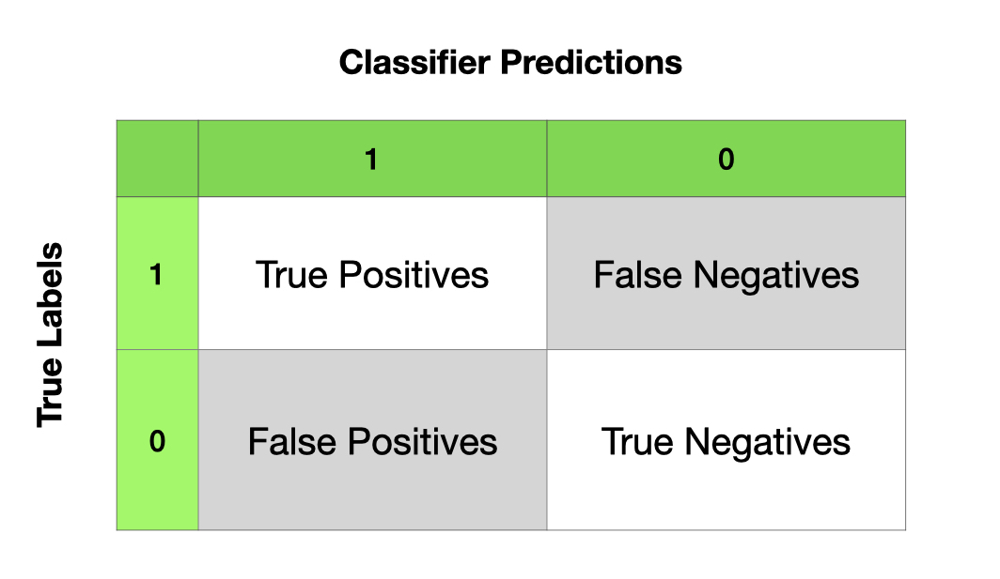

Machine Learning: A Simple Example
Contents
2. Machine Learning: A Simple Example¶
2.1. A Quick Example: Name Gender Prediction¶
Let’s assume that we have collected a list of personal names and we have their corresponding gender labels, i.e., whether the name is a male or female one.
The goal of this example is to create a classifier that would automatically classify a given name into either male or female.
Prepare Data¶
We use the data provided in NLTK. Please download the corpus data if necessary.
We load the corpus,
nltk.corpus.namesand randomize it before we proceed.
import numpy as np
import nltk
from nltk.corpus import names
import random
labeled_names = ([(name, 'male') for name in names.words('male.txt')] +
[(name, 'female') for name in names.words('female.txt')])
random.shuffle(labeled_names)
Feature Engineering¶
Now our unit for classification is a name.
In feature engineering, our goal is to transform the texts (i.e., names) into vectorized representations.
To start with, let’s represent each text (name) by using its last character as the features.
def text_vectorizer(word):
return {'last_letter': word[-1]}
text_vectorizer('Shrek')
{'last_letter': 'k'}
Train-Test Split¶
We then apply the feature engineering method to every text in the data and split the data into training and testing sets.
featuresets = [(text_vectorizer(n), gender) for (n, gender) in labeled_names]
train_set, test_set = featuresets[500:], featuresets[:500]
Train the Model¶
A good start is to try the simple Naive Bayes Classifier.
classifier = nltk.NaiveBayesClassifier.train(train_set)
Model Prediction¶
print(classifier.classify(text_vectorizer('Neo')))
print(classifier.classify(text_vectorizer('Trinity')))
print(classifier.classify(text_vectorizer('Alvin')))
male
female
male
print(nltk.classify.accuracy(classifier, test_set))
0.752
Post-hoc Analysis¶
One of the most important steps after model training is to examine which features contribute the most to the classifier prediction of the class.
classifier.show_most_informative_features(5)
Most Informative Features
last_letter = 'a' female : male = 34.9 : 1.0
last_letter = 'k' male : female = 31.9 : 1.0
last_letter = 'f' male : female = 16.5 : 1.0
last_letter = 'p' male : female = 11.1 : 1.0
last_letter = 'v' male : female = 10.4 : 1.0
Please note that in
NLTK, we can use theapply_featuresto create training and testing datasets.When you have a very large feature set, this can be more effective in terms of memory management.
This is our earlier method of creating training and testing sets:
featuresets = [(text_vectorizer(n), gender) for (n, gender) in labeled_names]
train_set, test_set = featuresets[500:], featuresets[:500]
from nltk.classify import apply_features
train_set = apply_features(text_vectorizer, labeled_names[500:])
test_set = apply_features(text_vectorizer, labeled_names[:500])
2.2. How can we improve the model/classifier?¶
In the following, we will talk about methods that we may consider to further improve the model training.
Feature Engineering
Error Analysis
Cross Validation
Try Different Machine-Learning Algorithms
(Ensemble Methods)
2.3. More Sophisticated Feature Engineering¶
We can extract more features from the names.
Use the following features for vectorized representations of names:
The first/last letter
Frequencies of all 26 alphabets in the names
def text_vectorizer2(name):
features = {}
features["first_letter"] = name[0].lower()
features["last_letter"] = name[-1].lower()
for letter in 'abcdefghijklmnopqrstuvwxyz':
features["count({})".format(letter)] = name.lower().count(letter)
features["has({})".format(letter)] = (letter in name.lower())
return features
text_vectorizer2('Alvin')
{'first_letter': 'a',
'last_letter': 'n',
'count(a)': 1,
'has(a)': True,
'count(b)': 0,
'has(b)': False,
'count(c)': 0,
'has(c)': False,
'count(d)': 0,
'has(d)': False,
'count(e)': 0,
'has(e)': False,
'count(f)': 0,
'has(f)': False,
'count(g)': 0,
'has(g)': False,
'count(h)': 0,
'has(h)': False,
'count(i)': 1,
'has(i)': True,
'count(j)': 0,
'has(j)': False,
'count(k)': 0,
'has(k)': False,
'count(l)': 1,
'has(l)': True,
'count(m)': 0,
'has(m)': False,
'count(n)': 1,
'has(n)': True,
'count(o)': 0,
'has(o)': False,
'count(p)': 0,
'has(p)': False,
'count(q)': 0,
'has(q)': False,
'count(r)': 0,
'has(r)': False,
'count(s)': 0,
'has(s)': False,
'count(t)': 0,
'has(t)': False,
'count(u)': 0,
'has(u)': False,
'count(v)': 1,
'has(v)': True,
'count(w)': 0,
'has(w)': False,
'count(x)': 0,
'has(x)': False,
'count(y)': 0,
'has(y)': False,
'count(z)': 0,
'has(z)': False}
text_vectorizer2('John')
{'first_letter': 'j',
'last_letter': 'n',
'count(a)': 0,
'has(a)': False,
'count(b)': 0,
'has(b)': False,
'count(c)': 0,
'has(c)': False,
'count(d)': 0,
'has(d)': False,
'count(e)': 0,
'has(e)': False,
'count(f)': 0,
'has(f)': False,
'count(g)': 0,
'has(g)': False,
'count(h)': 1,
'has(h)': True,
'count(i)': 0,
'has(i)': False,
'count(j)': 1,
'has(j)': True,
'count(k)': 0,
'has(k)': False,
'count(l)': 0,
'has(l)': False,
'count(m)': 0,
'has(m)': False,
'count(n)': 1,
'has(n)': True,
'count(o)': 1,
'has(o)': True,
'count(p)': 0,
'has(p)': False,
'count(q)': 0,
'has(q)': False,
'count(r)': 0,
'has(r)': False,
'count(s)': 0,
'has(s)': False,
'count(t)': 0,
'has(t)': False,
'count(u)': 0,
'has(u)': False,
'count(v)': 0,
'has(v)': False,
'count(w)': 0,
'has(w)': False,
'count(x)': 0,
'has(x)': False,
'count(y)': 0,
'has(y)': False,
'count(z)': 0,
'has(z)': False}
train_set = apply_features(text_vectorizer2, labeled_names[500:])
test_set = apply_features(text_vectorizer2, labeled_names[:500])
classifier = nltk.NaiveBayesClassifier.train(train_set)
print(nltk.classify.accuracy(classifier, test_set))
0.764
classifier.show_most_informative_features(n=20)
Most Informative Features
last_letter = 'a' female : male = 34.9 : 1.0
last_letter = 'k' male : female = 31.9 : 1.0
last_letter = 'f' male : female = 16.5 : 1.0
last_letter = 'p' male : female = 11.1 : 1.0
last_letter = 'v' male : female = 10.4 : 1.0
last_letter = 'd' male : female = 9.5 : 1.0
last_letter = 'm' male : female = 9.4 : 1.0
count(v) = 2 female : male = 9.3 : 1.0
last_letter = 'o' male : female = 9.0 : 1.0
count(i) = 3 male : female = 8.4 : 1.0
last_letter = 'r' male : female = 6.8 : 1.0
last_letter = 'g' male : female = 5.4 : 1.0
last_letter = 'w' male : female = 5.3 : 1.0
count(a) = 3 female : male = 5.0 : 1.0
last_letter = 'b' male : female = 4.8 : 1.0
first_letter = 'w' male : female = 4.8 : 1.0
count(w) = 1 male : female = 4.4 : 1.0
has(w) = True male : female = 4.4 : 1.0
last_letter = 'z' male : female = 4.3 : 1.0
last_letter = 's' male : female = 4.1 : 1.0
2.4. Train-Development-Test Data Splits for Error Analysis¶
Normally we have training-testing splits of data
Sometimes we can use development (dev) set for error analysis and feature engineering.
This dev set should be independent of training and testing sets.
Now let’s train the model on the training set and first check the classifier’s performance on the dev set.
We then identify the errors the classifier made in the dev set.
We perform error analysis for further improvement.
We only test our final model on the testing set. (Note: Testing set can only be used once.)
train_names = labeled_names[1500:]
devtest_names = labeled_names[500:1500]
test_names = labeled_names[:500]
train_set = [(text_vectorizer2(n), gender) for (n, gender) in train_names]
devtest_set = [(text_vectorizer2(n), gender) for (n, gender) in devtest_names]
test_set = [(text_vectorizer2(n), gender) for (n, gender) in test_names]
classifier = nltk.NaiveBayesClassifier.train(train_set)
print(nltk.classify.accuracy(classifier, devtest_set))
0.798
errors = []
for (name, tag) in devtest_names:
guess = classifier.classify(text_vectorizer2(name))
if guess != tag:
errors.append((tag, guess, name))
import csv
with open('error-analysis.csv', 'w') as f:
# using csv.writer method from CSV package
write = csv.writer(f)
write.writerow(['tag', 'guess', 'name'])
write.writerows(errors)
Ideally, we can inspect the errors in a spreadsheet and come up with better rules (features) that could help improve the classifier.
import pandas as pd
## check first and last N rows
pd.read_csv('error-analysis.csv').iloc[[*range(10), *range(-10, 0)],]
| tag | guess | name | |
|---|---|---|---|
| 0 | male | female | Joe |
| 1 | male | female | Kendal |
| 2 | female | male | Shanon |
| 3 | female | male | Fallon |
| 4 | male | female | Reggie |
| 5 | female | male | Jourdan |
| 6 | female | male | Rosalynd |
| 7 | male | female | Durante |
| 8 | male | female | Mel |
| 9 | male | female | Vasilis |
| 192 | female | male | Carmon |
| 193 | male | female | Vasili |
| 194 | female | male | Betsey |
| 195 | female | male | Honor |
| 196 | female | male | Roseann |
| 197 | female | male | Margurite |
| 198 | male | female | Gayle |
| 199 | male | female | Clinten |
| 200 | male | female | Etienne |
| 201 | female | male | Hildy |
2.5. Evaluation¶

Confusion Matrix:
True positives are relevant items that we correctly identified as relevant.
True negatives are irrelevant items that we correctly identified as irrelevant.
False positives (or Type I errors) are irrelevant items that we incorrectly identified as relevant.
False negatives (or Type II errors) are relevant items that we incorrectly identified as irrelevant.
Given these four numbers, we can define the following model evaluation metrics:
Accuracy: How many items were correctly classified, i.e., \(\frac{TP + TN}{N}\)
Precision: How many of the items identified by the classifier as relevant are indeed relevant, i.e., \(\frac{TP}{TP+FP}\).
Recall: How many of the true relevant items were successfully identified by the classifier, i.e., \(\frac{TP}{TP+FN}\).
F-Measure (or F-Score): the harmonic mean of the precision and recall,i.e.:
Note
When dealing with imbalanced class distributions, we need to take into account the baseline performance in our model evaluation. For example. if the distribution of Class 0 and Class 1 is 9:1, then a naive classifier might as well classify all cases as Class 0, yielding a high-precision performance (i.e., Precision = 90%).
Given this baseline, to better evaluate the classifier on imbalanced dataset, probably the classifier’s recall rates are more important.
print('Accuracy: {:4.2f}'.format(nltk.classify.accuracy(classifier, test_set)))
Accuracy: 0.77
## Compute the Confusion Matrix
t_f = [feature for (feature, label) in test_set] # features of test set
t_l = [label for (feature, label) in test_set] # labels of test set
t_l_pr = [classifier.classify(f) for f in t_f] # predicted labels of test set
cm = nltk.ConfusionMatrix(t_l, t_l_pr)
cm = nltk.ConfusionMatrix(t_l, t_l_pr)
print(cm.pretty_format(sort_by_count=True, show_percents=True, truncate=9))
| f |
| e |
| m m |
| a a |
| l l |
| e e |
-------+---------------+
female | <52.2%> 14.0% |
male | 9.2% <24.6%>|
-------+---------------+
(row = reference; col = test)
def createCM(classifier, test_set):
t_f = [feature for (feature, label) in test_set]
t_l = [label for (feature, label) in test_set]
t_l_pr = [classifier.classify(f) for f in t_f]
cm = nltk.ConfusionMatrix(t_l, t_l_pr)
print(cm.pretty_format(sort_by_count=True, show_percents=True, truncate=9))
createCM(classifier, test_set)
| f |
| e |
| m m |
| a a |
| l l |
| e e |
-------+---------------+
female | <52.2%> 14.0% |
male | 9.2% <24.6%>|
-------+---------------+
(row = reference; col = test)
2.6. Cross Validation¶
We can also check our average model performance using the cross-validation method.
 (Source: https://scikit-learn.org/stable/modules/cross_validation.html)
(Source: https://scikit-learn.org/stable/modules/cross_validation.html)
import sklearn.model_selection
kf = sklearn.model_selection.KFold(n_splits=10)
acc_kf = [] ## accuracy holder
## Cross-validation
for train_index, test_index in kf.split(train_set):
#print("TRAIN:", train_index, "TEST:", test_index)
classifier = nltk.NaiveBayesClassifier.train(
train_set[train_index[0]:train_index[len(train_index) - 1]])
cur_fold_acc = nltk.classify.util.accuracy(
classifier, train_set[test_index[0]:test_index[len(test_index) - 1]])
acc_kf.append(cur_fold_acc)
print('accuracy:', np.round(cur_fold_acc, 2))
accuracy: 0.76
accuracy: 0.78
accuracy: 0.77
accuracy: 0.76
accuracy: 0.79
accuracy: 0.76
accuracy: 0.78
accuracy: 0.78
accuracy: 0.8
accuracy: 0.78
np.mean(acc_kf)
0.7763489755899655
2.7. Try Different Machine Learning Algorithms¶
There are many ML algorithms for classification tasks.
Here we will demonstrate a few more classifiers implemented in NLTK, including:
Maximum Entropy Classifier (Logistic Regression)
Decision Tree Classifier
Also, in NLTK, we can use the classification methods provided in
sklearnas well, including:Naive Bayes
Logistic Regression
Support Vector Machine
When we try another ML algorithm, we do the following:
train the model
check model performance (accuracy and confusion matrix)
check the most informative features
obtain average performance using k-fold cross validation
Try Maxent Classifier¶
Maxent is memory hungry, slower, and it requires
numpy.
%%time
from nltk.classify import MaxentClassifier
classifier_maxent = MaxentClassifier.train(train_set,
algorithm='iis',
trace=0,
max_iter=10000,
min_lldelta=0.001)
CPU times: user 3min 36s, sys: 515 ms, total: 3min 37s
Wall time: 3min 50s
Note
The default algorithm for training is iis (Improved Iterative Scaling). Another alternative is gis (General Iterative Scaling), which is faster.
nltk.classify.accuracy(classifier_maxent, test_set)
0.772
classifier_maxent.show_most_informative_features(n=20)
-3.248 last_letter=='a' and label is 'male'
-2.446 last_letter=='k' and label is 'female'
-2.000 count(v)==2 and label is 'male'
-1.724 last_letter=='f' and label is 'female'
-1.559 count(i)==3 and label is 'female'
-1.542 last_letter=='p' and label is 'female'
1.528 count(j)==2 and label is 'female'
-1.437 last_letter=='m' and label is 'female'
-1.338 last_letter=='d' and label is 'female'
-1.230 last_letter=='v' and label is 'female'
-1.163 last_letter=='i' and label is 'male'
-1.143 last_letter=='o' and label is 'female'
1.044 last_letter=='c' and label is 'male'
-0.983 last_letter=='r' and label is 'female'
0.894 count(d)==3 and label is 'male'
0.791 count(g)==3 and label is 'male'
-0.741 count(a)==3 and label is 'male'
-0.738 count(m)==3 and label is 'female'
-0.729 count(e)==4 and label is 'male'
-0.723 last_letter=='g' and label is 'female'
createCM(classifier_maxent, test_set)
| f |
| e |
| m m |
| a a |
| l l |
| e e |
-------+---------------+
female | <55.6%> 10.6% |
male | 12.2% <21.6%>|
-------+---------------+
(row = reference; col = test)
%%time
for train_index, test_index in kf.split(train_set):
#print("TRAIN:", train_index, "TEST:", test_index)
classifier = MaxentClassifier.train(
train_set[train_index[0]:train_index[len(train_index) - 1]],
algorithm='gis',
trace=0,
max_iter=100,
min_lldelta=0.01) ## set smaller value for `min_lldelta`
print(
'accuracy:',
nltk.classify.util.accuracy(
classifier,
train_set[test_index[0]:test_index[len(test_index) - 1]]))
accuracy: 0.6972049689440993
accuracy: 0.6816770186335404
accuracy: 0.7251552795031055
accuracy: 0.7018633540372671
accuracy: 0.7060653188180405
accuracy: 0.6765163297045101
accuracy: 0.7247278382581649
accuracy: 0.6858475894245724
accuracy: 0.7060653188180405
accuracy: 0.71850699844479
CPU times: user 2min 57s, sys: 160 ms, total: 2min 57s
Wall time: 3min 1s
Try Decision Tree¶
Parameters:
binary: whether the features are binaryentropy_cutoff: a value used during tree refinement processentropy = 1 -> high-level uncertainty
entropy = 0 -> perfect model prediction
depth_cutoff: to control the depth of the treesupport_cutoff: the minimum number of instances that are required to make a decision about a feature.
%%time
from nltk.classify import DecisionTreeClassifier
classifier_dt = DecisionTreeClassifier.train(train_set,
binary=True,
entropy_cutoff=0.7,
depth_cutoff=5,
support_cutoff=5)
CPU times: user 9 s, sys: 5 ms, total: 9 s
Wall time: 9 s
nltk.classify.accuracy(classifier_dt, test_set)
0.716
createCM(classifier_dt, test_set)
| f |
| e |
| m m |
| a a |
| l l |
| e e |
-------+---------------+
female | <57.2%> 9.0% |
male | 19.4% <14.4%>|
-------+---------------+
(row = reference; col = test)
%%time
for train_index, test_index in kf.split(train_set):
#print("TRAIN:", train_index, "TEST:", test_index)
classifier = DecisionTreeClassifier.train(
train_set[train_index[0]:train_index[len(train_index) - 1]],
binary=True,
entropy_cutoff=0.7,
depth_cutoff=5,
support_cutoff=5)
print(
'accuracy:',
nltk.classify.util.accuracy(
classifier,
train_set[test_index[0]:test_index[len(test_index) - 1]]))
accuracy: 0.7236024844720497
accuracy: 0.7204968944099379
accuracy: 0.7313664596273292
accuracy: 0.7003105590062112
accuracy: 0.7325038880248833
accuracy: 0.6967340590979783
accuracy: 0.7293934681181959
accuracy: 0.6982892690513219
accuracy: 0.7122861586314152
accuracy: 0.7247278382581649
CPU times: user 1min 29s, sys: 42.3 ms, total: 1min 29s
Wall time: 1min 29s
Try sklearn Classifiers¶
sklearnis a very useful module for machine learning. We will talk more about this module in our later lectures.This package provides a lot more ML algorithms for classification tasks.
Naive Bayes in sklearn¶
from nltk.classify.scikitlearn import SklearnClassifier
from sklearn.naive_bayes import MultinomialNB
sk_classifier = SklearnClassifier(MultinomialNB())
sk_classifier.train(train_set)
<SklearnClassifier(MultinomialNB(alpha=1.0, class_prior=None, fit_prior=True))>
nltk.classify.accuracy(sk_classifier, test_set)
0.768
Logistic Regression in sklearn¶
from sklearn.linear_model import LogisticRegression
sk_classifier = SklearnClassifier(LogisticRegression(max_iter=500))
sk_classifier.train(train_set)
nltk.classify.accuracy(sk_classifier, test_set)
0.786
Support Vector Machine in sklearn¶
sklearnprovides several implementations for Support Vector Machines.Please see its documentation for more detail: Support Vector Machine
from sklearn.svm import SVC
sk_classifier = SklearnClassifier(SVC())
sk_classifier.train(train_set)
nltk.classify.accuracy(sk_classifier, test_set)
0.802
from sklearn.svm import LinearSVC
sk_classifier = SklearnClassifier(LinearSVC(max_iter=2000))
sk_classifier.train(train_set)
nltk.classify.accuracy(sk_classifier, test_set)
0.784
from sklearn.svm import NuSVC
sk_classifier = SklearnClassifier(NuSVC())
sk_classifier.train(train_set)
nltk.classify.accuracy(sk_classifier, test_set)
0.796
2.8. Remaining Issues¶
Feature engineering is crucial to the process of machine learning.
The quality of the text vectorization almost determines the classifier’s performance to a great deal.
Every ML algorithm requires a lot of hyperparameter settings, which can have substantial impact on the model performances.
We need a more systematic way to find the optimal combinations of hyperparameters for a given ML algorithm.
We will come back to issue when we talk about doing ML with
sklearn.
2.9. References¶
NLTK Book, Chapter 6 Learning to Classify Texts
Géron (2019), Chapter 3 Classification